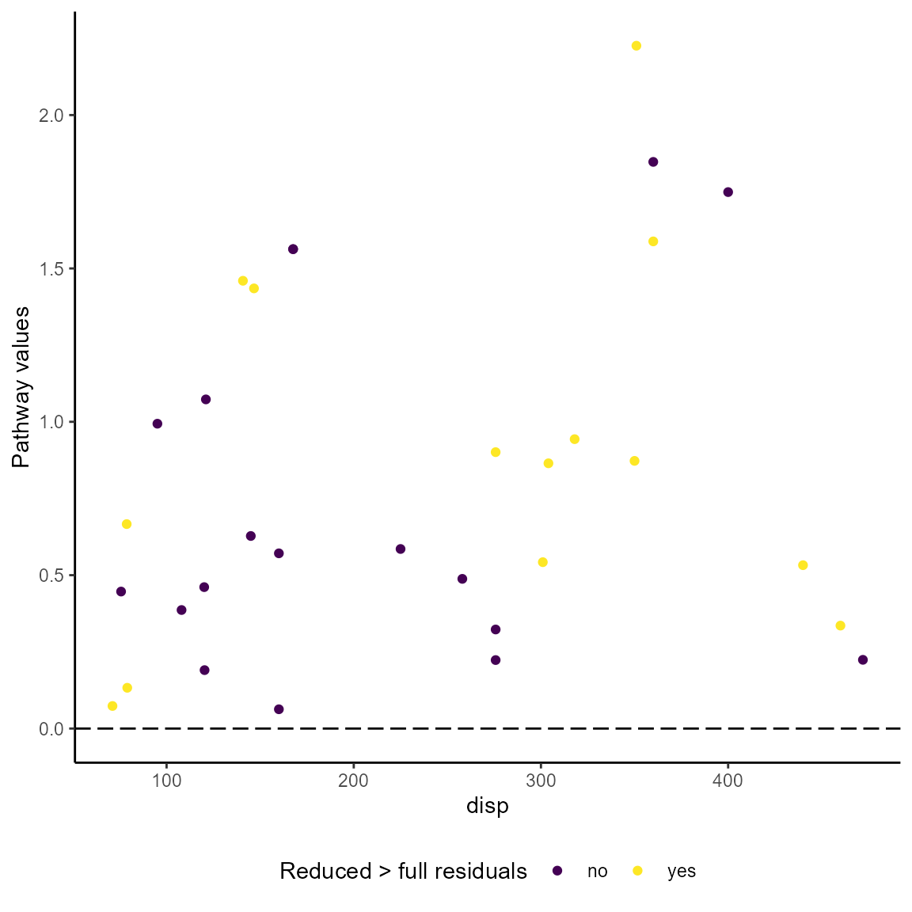

library(MMRcaseselection)
The pathway was originally proposed by Gerring (2007). He defines the pathway value of a case as \(|resid_{i_{reduced}}-resid_{i_{full}}|\) if it holds that \(|resid_{i_{reduced}}| > |resid_{i_{full}}|\), where ‘full’ stands for the full regression model, ‘reduced’ for the model that lacks the pathway variable of theoretical interest and \(i\) being a case index. Following Gerring, one should only choose among the cases meeting the requirement that \(|resid_{i_{reduced}}| > |resid_{i_{full}}|\). In follow up research, Weller and Barnes (2014) propose a different calculation of the pathway value, \(|resid_{i_{reduced}}|-|resid_{i_{full}}|\), without specifying an additional requirement about the relationship between the full model residuals and reduced model residuals.
The function pathway() calculates both types of pathway values and requires the full regression model and the reduced regression model as input. Both models must be lm objects. The dataframe generated by the function contains all variables from the full model plus the following variables:
full_resid: Residuals in full modelreduced_resid: Residuals in reduced modelpathway_wb: Pathway values as proposed by Weller and Barnes (\(|resid_{i_{reduced}}|-|resid_{i_{full}}|\))pathway_gvalue: Pathway values as proposed by Gerring (\(|resid_{i_{reduced}}-resid_{i_{full}}|\))pathway_gstatus: Binary character variable that is coded “yes” if \(|resid_{reduced}| > |resid_{full}|\) is met and “no” otherwise.df_full <- lm(mpg ~ disp + wt, data = mtcars) # full model df_reduced <- lm(mpg ~ wt, data = mtcars) # reduced model dropp 'disp' as pathway variable pw_out <- pathway(df_full, df_reduced) # calculation of pathway variables head(pw_out) #> mpg disp wt full_resid reduced_resid pathway_wb #> Mazda RX4 21.0 160 2.620 -2.345433 -2.2826106 -0.06282193 #> Mazda RX4 Wag 21.0 160 2.875 -1.490972 -0.9197704 -0.57120172 #> Datsun 710 22.8 108 2.320 -2.472367 -2.0859521 -0.38641476 #> Hornet 4 Drive 21.4 258 3.215 1.785333 1.2973499 -0.48798349 #> Hornet Sportabout 18.7 360 3.440 1.647193 -0.2001440 -1.44704909 #> Valiant 18.1 225 3.460 -1.278631 -0.6932545 -0.58537640 #> pathway_gvalue pathway_gtype #> Mazda RX4 0.06282193 no #> Mazda RX4 Wag 0.57120172 no #> Datsun 710 0.38641476 no #> Hornet 4 Drive 0.48798349 no #> Hornet Sportabout 1.84733701 no #> Valiant 0.58537640 no
The visualization of pathway values is different from the presentation of ordinary residuals because two models are involved and an observed-vs-fitted plot is not meaningful. Following the approach by Weller and Barnes, the pathway_xvr() function plots the pathway values against the pathway variable. The option pathwaytype = "pathway_wb produces a plot for the Weller/Barnes values. The pathway variable is determined by the function and does not have to be specified. The plot is a gg object that can be customized with the usual ggplot2 options.
pathway_xvr(df_full, df_reduced, pathway_type = "pathway_wb")
The Gerring pathway values are plotted against the pathway variable if the option is `pathway_type = “pathway_gvalue”. A color scheme is used to distinguish the cases that meet the pathway case requirement (“yes”) from those that don’t (“no”).
pathway_xvr(df_full, df_reduced, pathway_type = "pathway_gvalue")
